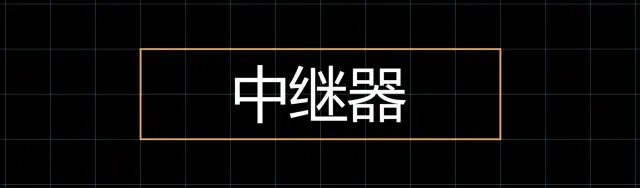
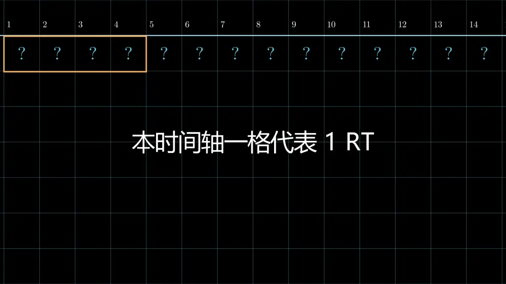
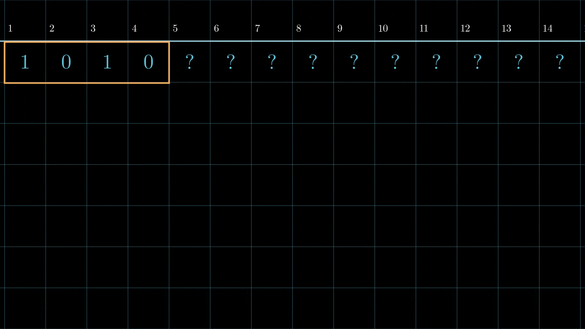
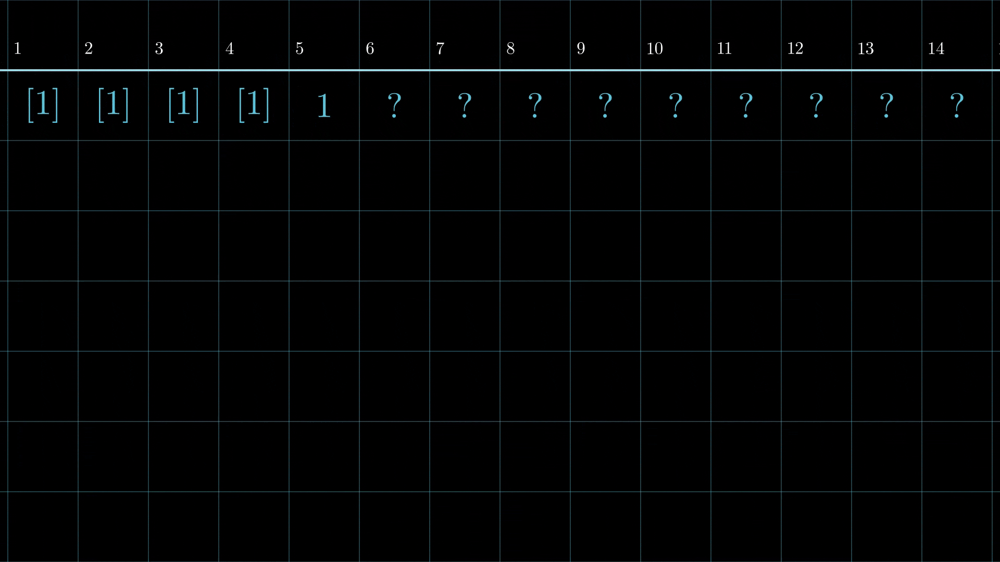
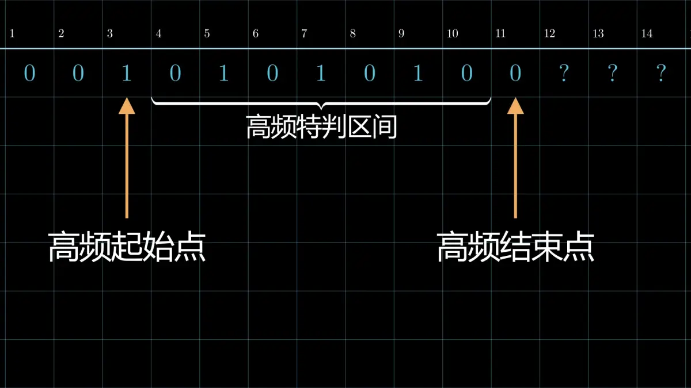
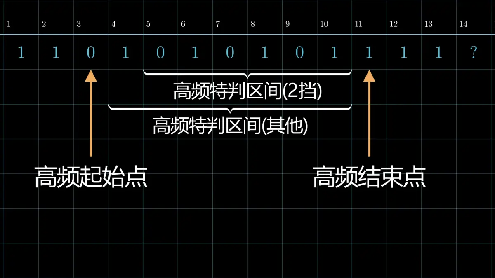
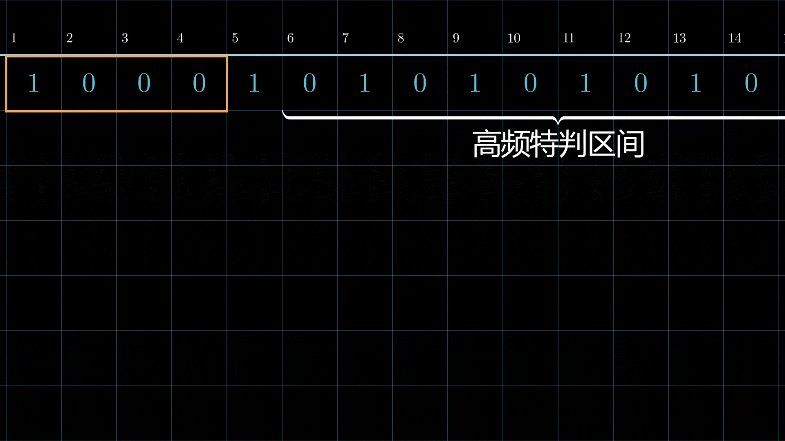
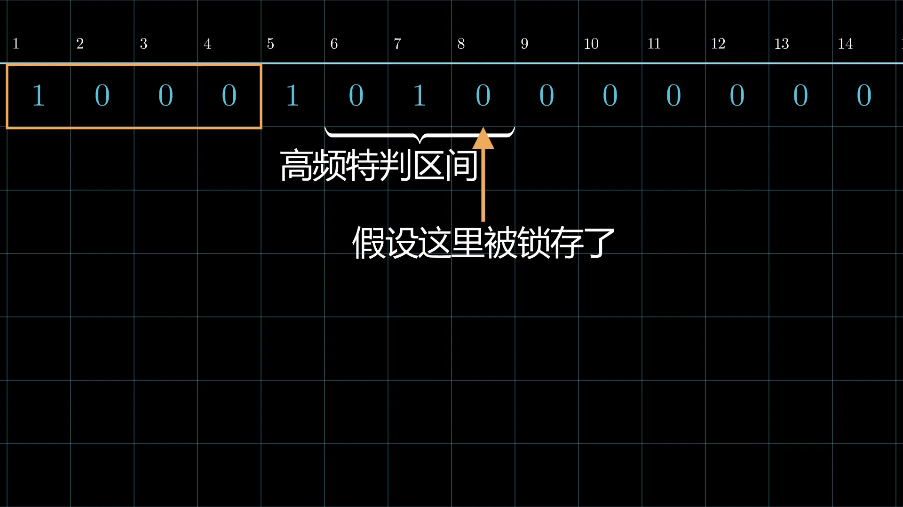

01 表示输入信号，输出信号用 01 加上方括号表示: [0] [1]。
先在时间轴上画出输入信号，我们计算输出信号都要在这个轴上进行。
如果是 1 挡中继器，输出信号与输入信号相同，没有延迟。
如果是 2 挡及以上中继器，在时间轴上画出一个长度为挡数的滑块，滑块从输入信号开始时画，以 4 挡为例。

左上角就是我们的滑块
一般信号计算规则
1. 初始化输出信号
向后滑动滑块至滑块内没有输出信号。如果滑块内有一个或多个输入 1，则滑块内全部变为输出[1]，反之全部变为输出[0]。

如果一个输出信号后面紧邻对应的输入信号，比如[1]接 1，[0]接 0，则输入信号转为对应输出信号。

重复上面两步，直到处理完所有信号。
最后将我们的计算结果沿时间轴往后移 3rt，如果是 3 挡就移 2rt，以此类推。移完后就是最终的输出结果。
高频输入特判规则
这里高频指 4gt 周期高频，也就是rt尺度上 10101010...的输入。
1. 高频特判区间
先找出高频信号开始的位置和高频中断的位置。
则不包括两端，二者之间为高频特判区间；除了二挡中继器并且高频信号以下降沿信号开头，这种情况还要在前面的基础上去除开头位置。


2. 高频特判
当滑块处于高频特判区间内时，滑块内先全部转为输出[1]信号，滑动滑块至滑块内没有输出信号，如果滑块仍然处于同一个滑块区间，则滑块内先全部转为输出[0] 信号，如此循环。
如果输入高频以下降沿信号开头，则先转成输出[0] 信号，滑动滑块，转成输出[1]信号，如此循环。

如果滑块不处于高频特判区间内，则仍然使用一般信号计算规则。
最后将我们的计算结果沿时间轴往后移 3rt，如果是 3 挡移 2rt，以此类推。移完后就是最终的输出结果。
锁存
可以在时间轴上标记出被锁存的时间点。
如果在滑动滑块的过程中，有被锁存的时间点进入滑块，则把滑块头部前一刻的状态填充入滑块，然后继续滑动。

实例分析
暂略